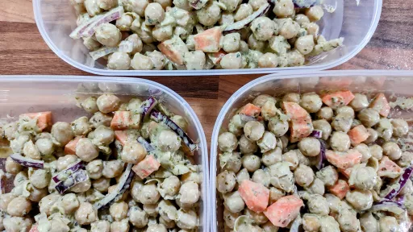

Categories
Beef
Chicken
Dessert
Lamb
Pork
Seafood
Turkey
Veggie
Cuisines
American
Asian
British
Cajun
Caribbean
Creole
French
Greek
Hawaiian
Hungarian
Indian
Italian
Japanese
Mediterranean
Mexican
Middle Eastern
Moroccan
North African
Portuguese
Russian
Spanish
Thai
Turkish
Diet
Vegan
Gluten free
Dairy free
Nut free
Recent recipes
Chicken parmigiana
30 mins
Serves 4
Nutrition ✓
Italian

Pesto chickpea salad
10 mins
Serves 4
Nutrition ✓
Warm pearl couscous salad
25 mins
Serves 4
Nutrition ✓
Seekh kebab with mint chutney
2 hr 45 mins
Serves 6
Indian
Baked sweet potato with easy black bean chilli
1 hr 35 mins
Serves 4
Nutrition ✓
Mexican
Slow-cooked pork and fennel ragu
4 hr 10 mins
Serves 8
Nutrition ✓
Dairy Free
Gluten Free
Easy pesto chicken and vegetables
30 mins
Serves 4
Nutrition ✓
One-pan orecchiette puttanesca
40 mins
Serves 4